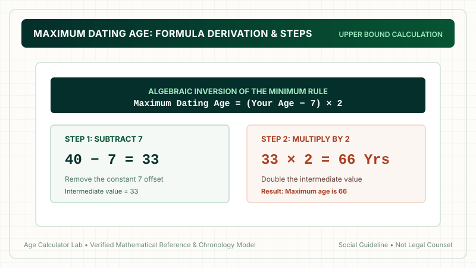
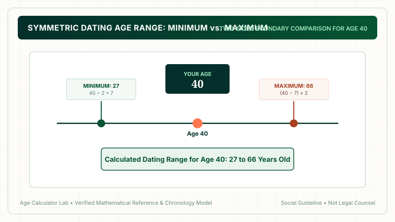

The maximum dating age is calculated using the formula: (Your Age − 7) × 2. For example, if you are 40 years old: 40 − 7 = 33, then 33 × 2 = 66 years old. This formula represents the algebraic inverse of the traditional minimum dating age rule, ensuring that you fall within the older partner's minimum acceptable age. Use our interactive Dating Age Calculator to find your complete range.
1. What Is Maximum Dating Age?
The maximum dating age answers the mirror image of the dating rule question: "What is the oldest age a person can date while ensuring both partners satisfy conventional social guidelines?"
While the popular folk phrase mentions only "half your age plus seven," a relationship involves two people. If an older partner dates you, the relationship only satisfies the rule if you are older than or equal to their minimum age. This mathematical requirement allows us to calculate an exact upper ceiling.
2. The Formula & Algebraic Derivation
How do we find the upper formula? We simply invert the standard minimum equation algebraically:
Let P = Older Partner's Age, and Y = Your Age.
By definition, for the partner, you must be at least their minimum:
Y = (P ÷ 2) + 7
Subtract 7 from both sides:
Y − 7 = P ÷ 2
Multiply both sides by 2:
P = (Y − 7) × 2
The Maximum Dating Age Formula
Where Your Age is your completed age in whole chronological years.

3. Step-by-Step Worked Calculation (Age 40)
Let's calculate the upper dating boundary for someone who is 40 years old:
- Step 1: Subtract 7
Remove the constant offset:40 − 7 = 33. - Step 2: Multiply by 2
Double the remaining value:33 × 2 = 66. - Verification Check:
If the older partner is 66, what is their minimum dating age?(66 ÷ 2) + 7 = 33 + 7 = 40! The math aligns with exact reciprocal symmetry.
4. Maximum Dating Age Chart (Ages 18 to 70)
The table below outlines the calculated upper boundary across common adult ages:
| Your Age | Subtract 7 | Multiply by 2 | Maximum Partner Age | Allowable Older Gap |
|---|---|---|---|---|
| 18 | 11 | × 2 | 22 years old | 4 years |
| 20 | 13 | × 2 | 26 years old | 6 years |
| 22 | 15 | × 2 | 30 years old | 8 years |
| 25 | 18 | × 2 | 36 years old | 11 years |
| 28 | 21 | × 2 | 42 years old | 14 years |
| 30 | 23 | × 2 | 46 years old | 16 years |
| 35 | 28 | × 2 | 56 years old | 21 years |
| 40 | 33 | × 2 | 66 years old | 26 years |
| 45 | 38 | × 2 | 76 years old | 31 years |
| 50 | 43 | × 2 | 86 years old | 36 years |
| 60 | 53 | × 2 | 106 years old | 46 years |
5. How Minimum and Maximum Connect (Symmetry)
The beauty of this mathematical model is its reciprocal consistency. If a couple consists of a 28-year-old and a 42-year-old:
- For the 42-year-old: Minimum is
(42 ÷ 2) + 7 = 28. (The 28-year-old is at their exact minimum!) - For the 28-year-old: Maximum is
(28 − 7) × 2 = 42. (The 42-year-old is at their exact maximum!)
Both individuals satisfy the rule simultaneously from their respective perspectives.

6. Putting Minimum & Maximum Together
When you combine both boundaries, you get your full dating range. For instance, a 30-year-old has:
- Minimum:
(30 ÷ 2) + 7 = 22 years old - Maximum:
(30 − 7) × 2 = 46 years old - Dating Age Bracket: 22 to 46 years old
This reveals a span of 24 total years within conventional social acceptance.
7. Why Does the Upper Bound Expand So Dramatically?
People often notice that their upper boundary allows for much larger age gaps than their lower boundary. Why?
Because the allowable age gap is always proportional to the older person's age. When you are the younger partner, your older partner's higher age allows for a wider numerical gap according to the formula.
8. Mathematical Elegance: Why the Inverse Formula Works
To truly understand why the formula Maximum Age = (Your Age − 7) × 2 works so cleanly, let's explore the underlying arithmetic symmetry. In mathematics, an inverse function undoes the operation of the original function.
The standard minimum formula applies two operations in sequence: first divide by 2, then add 7. To invert that sequence, you must apply the opposite operations in reverse order: first subtract 7, then multiply by 2.
Let's verify this reciprocal relationship across several paired ages:
- Pair 1 (Age 22 and Age 30):
For the 30-year-old: Minimum =30 ÷ 2 + 7 = 22.
For the 22-year-old: Maximum =(22 − 7) × 2 = 15 × 2 = 30.
The formulas mirror each other with 100% mathematical precision. - Pair 2 (Age 32 and Age 50):
For the 50-year-old: Minimum =50 ÷ 2 + 7 = 32.
For the 32-year-old: Maximum =(32 − 7) × 2 = 25 × 2 = 50.
Again, perfect reciprocal symmetry is preserved.
This algebraic consistency ensures that if Partner A considers Partner B acceptable under the rule, Partner B will never find Partner A outside their allowable range. The rule is completely cooperative.
9. Key Life Considerations When Dating an Older Partner
While society often focuses on the dynamics of dating younger, dating someone significantly older near your maximum boundary brings its own distinct practical considerations:
- Retirement & Financial Disparities: An older partner may be preparing to transition out of the workforce, liquidate assets, or downsize, while you are still aggressively climbing career ladders and building retirement accounts.
- Generational Health & Caregiving: An age difference of 15 to 25 years means that one partner will navigate the physical limitations of senior living, medical appointments, and potential caregiving needs well before the other.
- Family Blending & Children: An older partner may have adult children, grandchildren, or previous marriages, creating complex family dynamics that require sensitivity, legal planning, and clear estate agreements.
- Friendship Circle Integration: Spending time with peer groups that belong to different generational cohorts requires open-mindedness and mutual respect.
10. What Does Real Demographic Census Data Reveal?
While the maximum dating age formula allows an age gap of up to 26 years for a 40-year-old, how does this compare to actual marriage statistics around the world?
According to census reports from the U.S. Census Bureau, the UK Office for National Statistics (ONS), and Statistics Canada:
- Same-Age or Within 1 Year: Roughly 33% of married couples are within 12 months of each other's age.
- Within 2 to 3 Years: Approximately 60% of all married couples fall within a 3-year age gap.
- Within 5 Years: Over 80% of couples marry someone within 5 years.
- Gaps of 10 to 14 Years: Comprise approximately 6% to 8% of marriages.
- Gaps of 15+ Years: Account for less than 2% to 3% of all marriages worldwide.
These demographic statistics demonstrate that while the maximum dating age formula establishes a generous social envelope, the vast majority of human partnerships form between peers who share tightly aligned life stages and generational milestones.
8. Practical Dating Dynamics for Older Partners
When dating an older partner near your maximum boundary, relationship dynamics often involve:
- Disparate Life Stages: One partner may be entering retirement while the other is in peak career acceleration.
- Health & Energy Realities: Chronic health management, mobility, and lifestyle pacing become relevant considerations.
- Family & Parenting Timelines: Decisions regarding having children or raising stepchildren often require explicit discussions.
9. Social Perceptions vs Statistical Realities
While the mathematical formula permits substantial upper age gaps, statistical data from national census bureaus indicates that relationships where one partner is more than 15 years older comprise less than 3% of marriages. The formula defines the outer edge of social tolerance, not standard demographic practice.
10. Using the Interactive Dating Age Calculator
Rather than solving algebraic inversions on paper, you can use our free interactive Dating Age Calculator. Simply type in your current age to view your complete minimum and maximum boundaries instantly.
11. Frequently Asked Questions
What is the maximum dating age formula?
The maximum dating age formula is: Maximum Age = (Your Age − 7) × 2. For instance, if you are 40 years old: (40 − 7) × 2 = 33 × 2 = 66 years old.
How is the maximum dating age formula derived?
It is derived by inverting the minimum rule algebraically. If your partner's minimum age is (Partner Age ÷ 2) + 7 = Your Age, solving for Partner Age produces: Partner Age = (Your Age − 7) × 2.
What is the oldest person a 25-year-old can date?
For a 25-year-old: (25 − 7) × 2 = 18 × 2 = 36 years old. A 36-year-old's minimum dating age is (36 ÷ 2) + 7 = 25, creating perfect reciprocity.
What is the oldest person a 30-year-old can date?
For a 30-year-old: (30 − 7) × 2 = 23 × 2 = 46 years old.
Why is the maximum age gap larger than the minimum age gap?
Because when someone is older than you, their allowable gap is calculated based on their larger age, allowing for a numerically wider span.
Is the maximum dating age legally enforced?
No. There is no legal upper limit on age gaps between consenting adults. Two consenting legal adults of any ages can marry or date legally in almost all jurisdictions.
Can you use this formula on any age?
The formula mathematically works for ages 14 and above, but for consenting adult dating, it is meant to be applied by individuals aged 18 and older.
Where can I calculate my complete dating age range?
Use our interactive Dating Age Calculator to see both your minimum and maximum dating age simultaneously.
12. Final Takeaway
The maximum dating age formula (Age − 7) × 2 provides a symmetrical complement to the classic half-your-age rule. While it offers a fun demographic guideline, adult relationships succeed when two people share deep mutual values, life goals, and emotional respect.

Methodology & Verification Standards
- Upper Bound Algorithm:
Max = (Age − 7) × 2. - Algebraic Derivation: Inversion of the canonical
Min = (Age ÷ 2) + 7rule. - Editorial Purpose: Chronological reference and social arithmetic analysis.
- Review Date: October 2026.